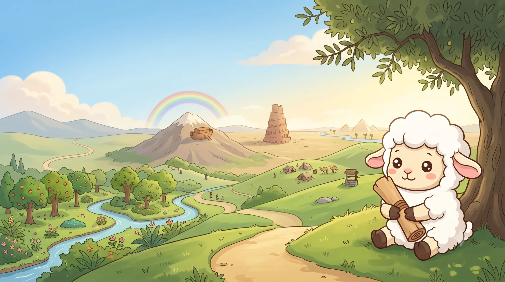
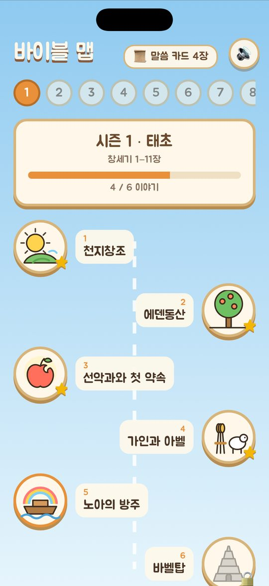
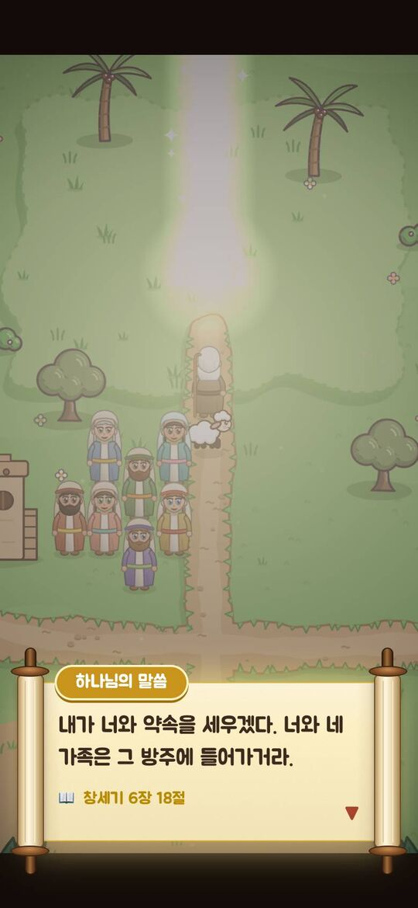
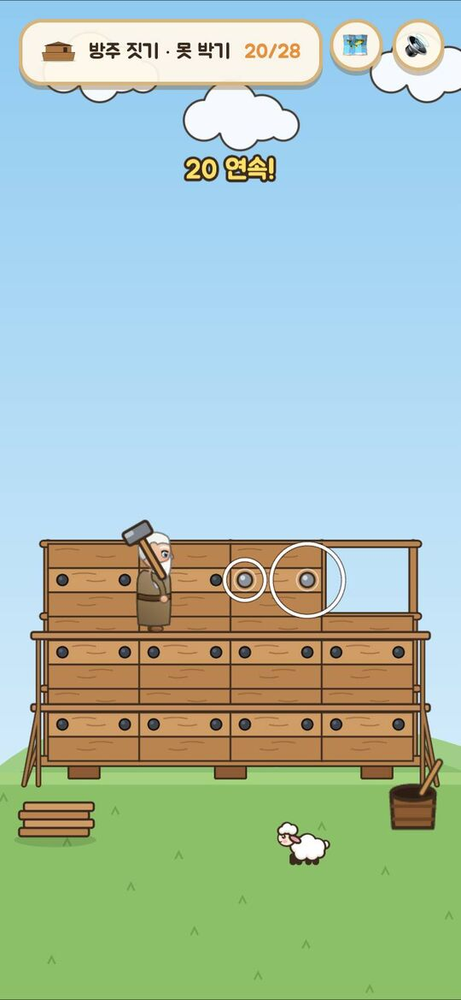
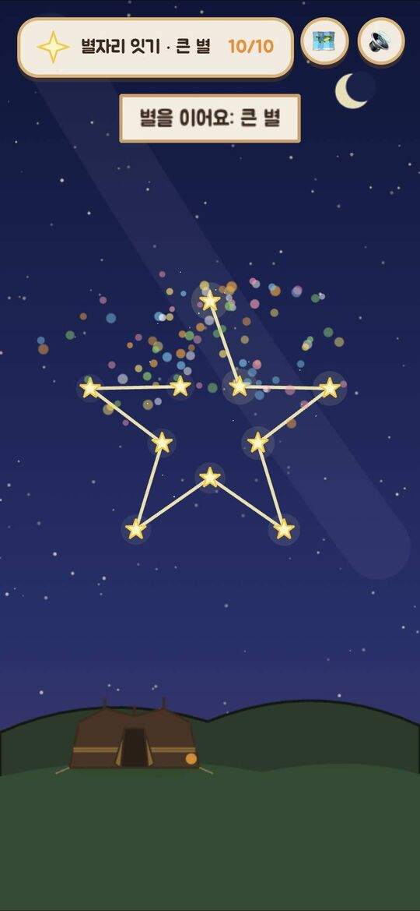
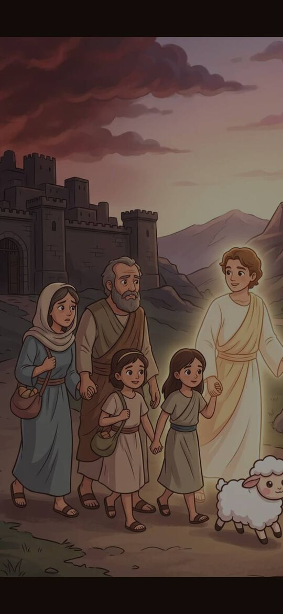
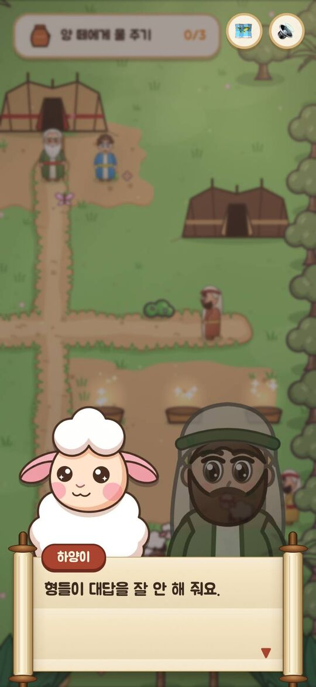
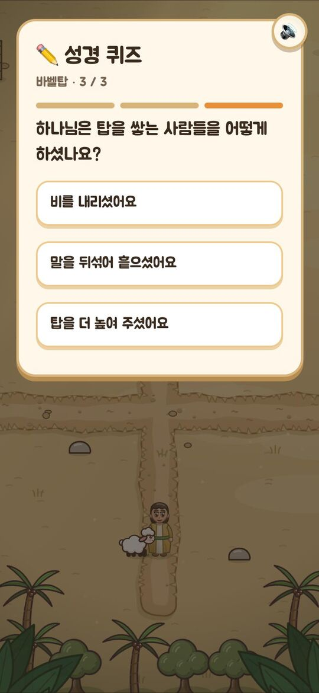
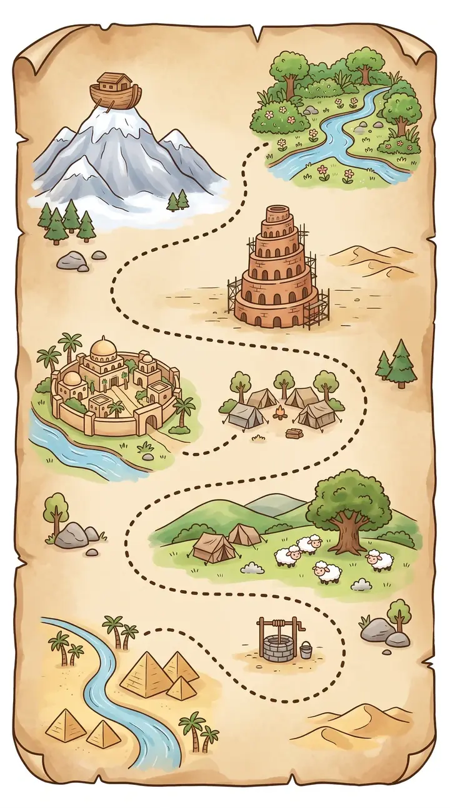

어린이 성경 어드벤처 · 시즌 1 창세기
어린 양 하양이와 함께 성경 속을 직접 걷고, 돕고, 고르며 하나님의 이야기를 경험해요. 천지창조부터 요셉까지, 창세기 전체를 26개 이야기로 여행해요.
01 / 26 이야기
창세기 1:1–2:3
창세기의 흐름을 따라 네 부분으로 나눴어요. 이야기는 성경 순서대로 하나씩 열리고, 끝까지 보면 말씀 카드와 성경 퀴즈가 기다려요.
천지창조부터 요셉의 용서까지, 손그림 원화가 움직이는 짧은 소개 영상과 실제 게임 화면이에요.







하나님의 말씀에는 성경 본문 위치를 함께 보여 주고, 이야기마다 개역한글 말씀 카드를 모아요.
이야기 끝 퀴즈로 내용을 되짚어요. 틀려도 정답과 성경 위치를 알려 주고, 몇 번이든 다시 풀 수 있어요.
이야기마다 손그림 컷신이 있고, 인물들의 표정이 대사와 상황에 맞게 바뀌어요.
하양이와 인물들의 목소리가 이야기를 들려줘요. 배경음악, 효과음, 목소리는 따로 끌 수 있어요.
글자는 화면을 눌러야 넘어가요. 실패해도 잃는 것 없이 다시 해 볼 수 있어요.
하나님은 사람 모습으로 그리지 않고 빛으로 표현했어요. 무서운 장면은 보여 주지 않아요.

바이블 맵의 "부모님 · 선생님" 화면(어른 확인 후 열림)에서 이야기마다 본문, 핵심 내용, 아이와 나눌 질문 두 가지를 볼 수 있어요. 설명이 필요한 장면에는 지도할 때 살펴볼 점도 적어 두었어요. 주일학교 공과와 함께 활용해 보세요.